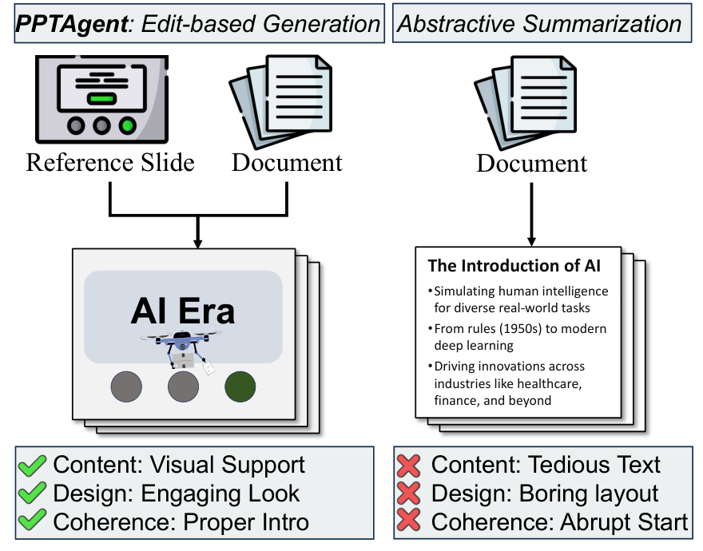
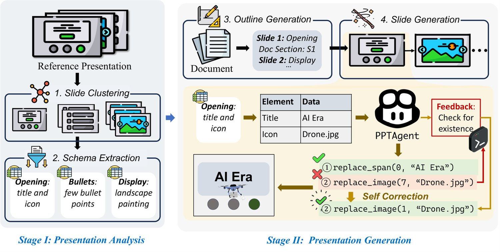
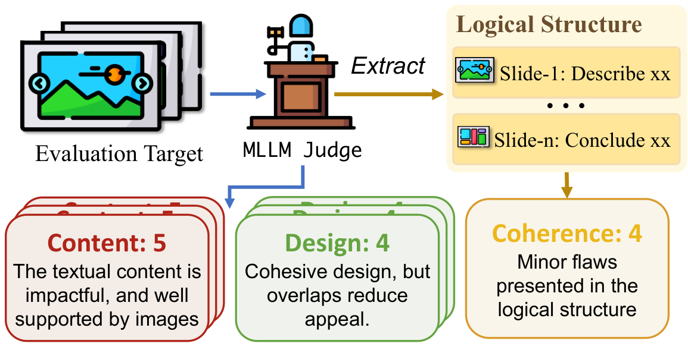
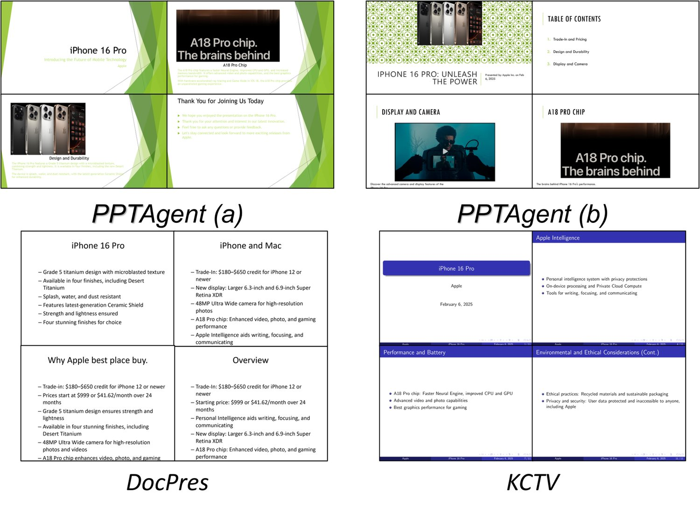
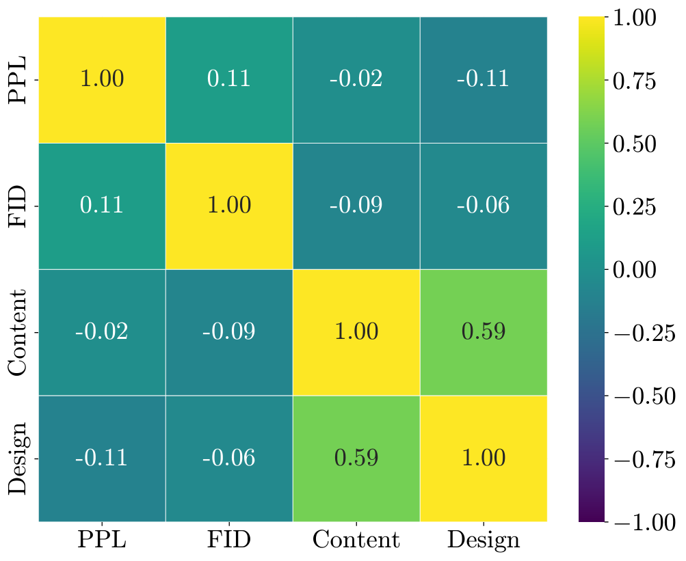
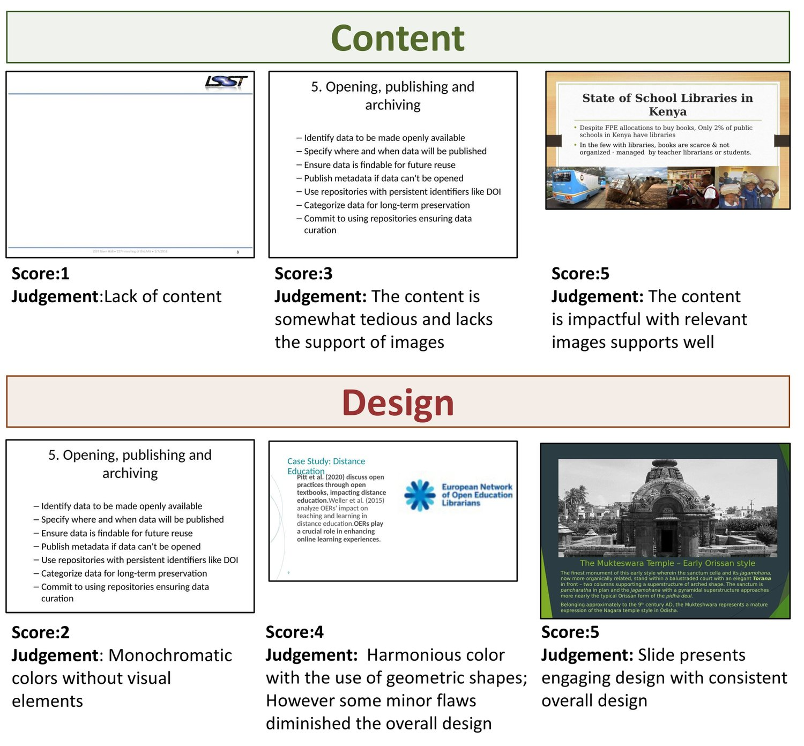
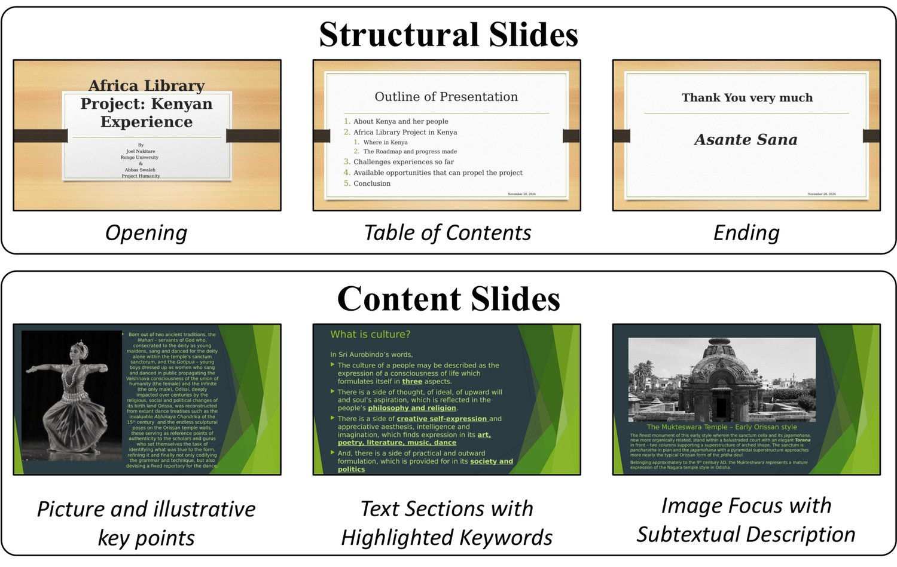
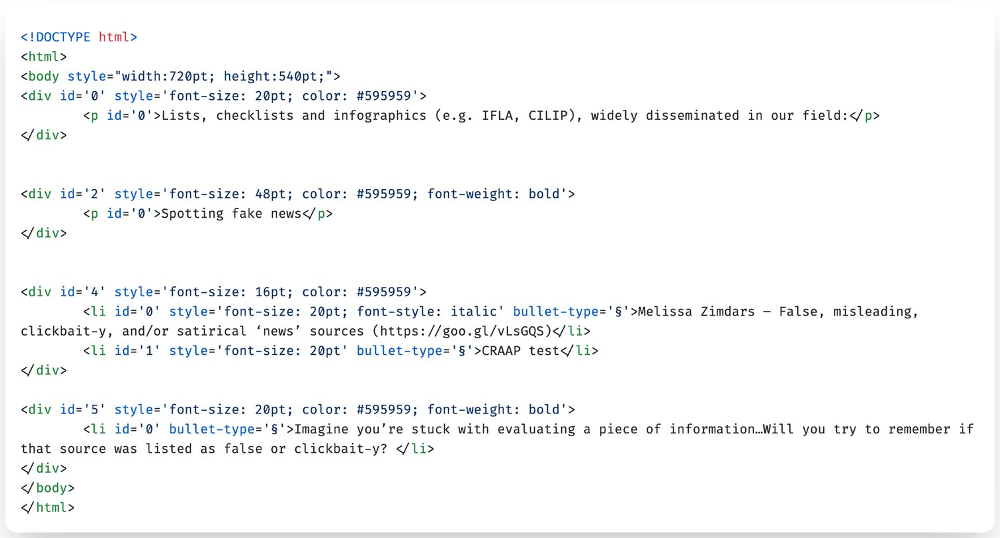
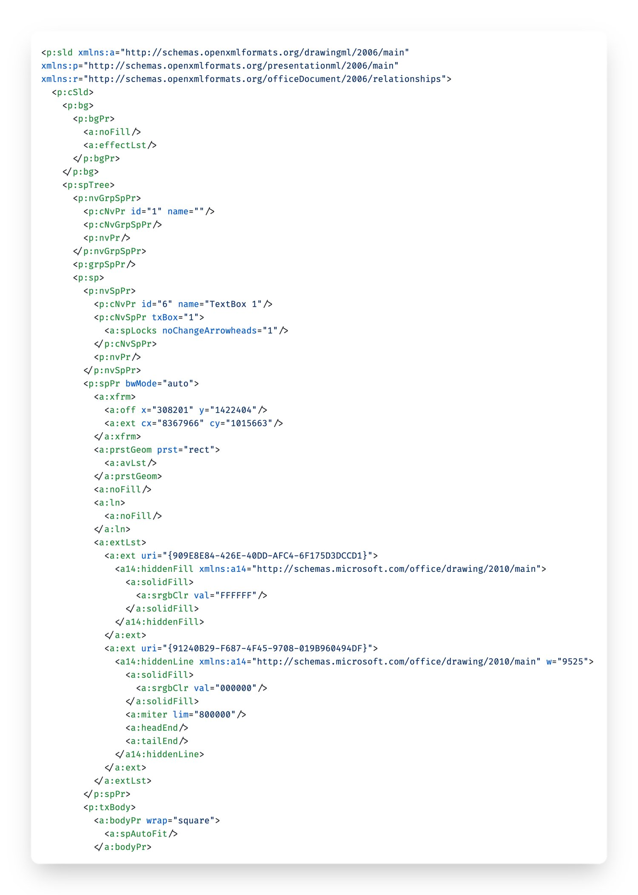

Automatically generating presentations from documents is a challenging task that requires accommodating content quality, visual appeal, and structural coherence. Existing methods primarily focus on improving and evaluating the content quality in isolation, overlooking visual appeal and structural coherence, which limits their practical applicability. To address these limitations, we propose PPTAgent, which comprehensively improves presentation generation through a two-stage, edit-based approach inspired by human workflows. PPTAgent first analyzes reference presentations to extract slide-level functional types and content schemas, then drafts an outline and iteratively generates editing actions based on selected reference slides to create new slides. To comprehensively evaluate the quality of generated presentations, we further introduce PPTEval, an evaluation framework that assesses presentations across three dimensions: Content, Design, and Coherence. Results demonstrate that PPTAgent significantly outperforms existing automatic presentation generation methods across all three dimensions. The code and data are available at https://github.com/icip-cas/PPTAgent.
Presentations are a widely used medium for information delivery, valued for their visual effectiveness in engaging and communicating with audiences. However, creating high-quality presentations requires a captivating storyline, well-designed layouts, and rich, compelling content (Fu et al., 2022). Consequently, creating well-rounded presentations requires advanced presentation skills and significant effort. Given the inherent complexity of the presentation creation, there is growing interest in automating the presentation generation process (Mondal et al., 2024; Maheshwari et al., 2024; Ge et al., 2025) by leveraging the generalization capabilities of Large Language Models (LLMs) and Multimodal Large Language Models (MLLMs).


Existing approaches typically follow a text-to-slides paradigm, which converts LLM outputs into slides using predefined rules or templates. As shown in Figure 1, prior studies (Mondal et al., 2024; Sefid et al., 2021) tend to treat presentation generation as an abstractive summarization task, focusing primarily on textual content while neglecting the visual-centric nature (Fu et al., 2022) of presentation. This results in text-heavy and monotonous presentations that fail to engage audiences effectively (Barrick et al., 2018).
Rather than creating complex presentations from scratch in a single pass, human workflows typically involve selecting exemplary slides as references and then summarizing and transferring key content onto them (Duarte, 2010). Inspired by this process, we propose PPTAgent, which decomposes slide generation into two phases: selecting the reference slide and editing it step by step. However, achieving such an edit-based approach for presentation generation is challenging. First, due to the layout and modal complexity of presentations, it is difficult for LLMs to directly determine which slides should be referenced. The key challenge lies in enhancing LLMs’ understanding of reference presentations’ structure and content patterns. Second, most presentations are saved in PowerPoint’s XML format, as demonstrated in Figure 11, which is inherently verbose and redundant (Gryk, 2022), making it challenging for LLMs to robustly perform editing operations.
To address these challenges, PPTAgent operates in two stages. Stage I performs a comprehensive analysis of reference presentations to extract functional types and content schemas of slides, facilitating subsequent reference selection and slide generation. Stage II introduces a suite of edit APIs with HTML-rendered representation that simplifies slide modifications through code interaction (Wang et al., 2024b). Furthermore, we implement a self-correction mechanism (Kamoi et al., 2024) that allows LLMs to iteratively refine generated editing actions based on intermediate results and execution feedback, ensuring robust generation. As shown in Figure 2, we first analyze and cluster reference slides into categories (e.g., opening slides, bullet-point slides). For each new slide, PPTAgent selects an appropriate reference slide (e.g., opening slide for the first slide) and generates a series of editing actions (e.g., replace_span) to modify it.
Due to the lack of a comprehensive evaluation framework, we propose PPTEval, which adopts the MLLM-as-a-judge paradigm Chen et al. (2024a) to evaluate presentations across three dimensions: Content, Design, and CoherenceDuarte (2010). Human evaluations validate the reliability and effectiveness of PPTEval. Results demonstrate that PPTAgent generates high-quality presentations, achieving an average score of 3.67 for the three dimensions in PPTEval.
Our main contributions can be summarized as follows:
We propose PPTAgent, a framework that redefines automatic presentation generation as an edit-based process guided by reference presentations.
We introduce PPTEval, a comprehensive evaluation framework that assesses presentations across three dimensions: Content, Design, and Coherence.
We release the PPTAgent and PPTEval codebases, along with a new presentation dataset Zenodo10K, to support future research.
In this section, we formulate the presentation generation task and introduce our proposed PPTAgent framework, which consists of two distinct stages. In stage I, we analyze reference presentations through slide clustering and schema extraction, providing a comprehensive understanding of input presentations that facilitates subsequent reference selection and slide generation. In stage II, we leverage analyzed reference presentations to select reference slides and generate the target presentation for the input document through an iterative editing process. An overview of our workflow is illustrated in Figure 2.
PPTAgent is designed to generate an engaging presentation through an edit-based process. We provide formal definitions for the conventional method and PPTAgent to highlight their key differences.
The conventional method (Bandyopadhyay et al., 2024; Mondal et al., 2024) for creating each slide is formalized in Equation 1. Given the input content , it generates slide elements, each defined by its type, content, and styling attributes, such as .
| (1) |
While this conventional method is straightforward, it requires manual specification of styling attributes, which is challenging for automated generation (Guo et al., 2023). Instead of creating slides from scratch, PPTAgent generates a sequence of executable actions to edit reference slides, thereby preserving their well-designed layouts and styles. As shown in Equation 2, given the input content and the -th reference slide , which is selected from the reference presentation, PPTAgent generates a sequence of executable actions, where each action corresponds to a line of executable code.
| (2) |
In this stage, we analyze the reference presentation to guide the reference selection and slide generation. Firstly, we categorize slides based on their structural and layout characteristics through slide clustering. Then, we extract content schemas to identify the content organization of the slide in each cluster, providing a comprehensive description of slide elements.
Slides can be categorized into two main types based on their functionalities: structural slides that support the presentation’s organization (e.g., opening slides) and content slides that convey specific information (e.g., bullet-point slides). To distinguish between these two types, we employ LLMs to segment the presentation accordingly. For structural slides, we leverage LLMs’ long-context capability to analyze all slides in the input presentation, identifying structural slides, labeling their structural roles based on their textual features, and grouping them accordingly. For content slides, we first convert them into images and then apply a hierarchical clustering approach to group similar slide images. Subsequently, we utilize MLLMs to analyze the converted slide images, identifying layout patterns within each cluster. Further details are provided in Appendix D.
After clustering, we further analyzed their content schemas to facilitate the slide generation. Specifically, we define an extraction framework where each element is represented by its category, description, and content. This framework enables a clear and structured representation of each slide. Detailed instructions are provided in Appendix F, with an example of the schema shown below.
| Category | Description | Data |
|---|---|---|
| Title | Main title | Sample Library |
| Date | Date of the event | 15 February 2018 |
| Image | Primary image to illustrate the slide | Picture: Children in a library with … |
PPTAgent first generates an outline specifying reference slides and relevant content for each new slide. Then, it iteratively edits elements from reference slides through edit APIs to create the target presentation.
As shown in Figure 2, we utilize LLM to generate a structured outline consisting of multiple entries. Each entry represents a new slide, containing the reference slide and relevant document content of the new slide. The reference slide is selected based on the slide-level functional description in Stage I, while the relevant document content is identified based on the input document.
Guided by the structured outline, slides are generated iteratively based on the corresponding entries. For each slide, LLMs incorporate textual content and extracted image captions from the input document. The new slide adopts the layout of the reference slide while ensuring consistency in content and structural clarity.
Specifically, to generate a new slide based on the corresponding entry in the outline, we design edit-based APIs to enable LLMs to edit the reference slide. As shown below, these APIs support editing, removing, and duplicating slide elements. Moreover, given the complexity of the XML format in presentations, which is demonstrated in Appendix E, we render the reference slide into an HTML representation (Feng et al., 2024), offering a more precise and intuitive format for easier understanding. This HTML-based format, combined with our edit-based APIs, enables LLMs to perform precise content modifications on reference slides.
| Function Name | Description |
|---|---|
| del_span | Delete a span. |
| del_image | Delete an image element. |
| clone_paragraph | Create a duplicate of an existing paragraph. |
| replace_span | Replace the content of a span. |
| replace_image | Replace the source of image. |
Furthermore, to enhance robustness during the editing process, we implement a self-correction mechanism (Kamoi et al., 2024). Specifically, the generated editing actions are executed within a REPL11 1 https://en.wikipedia.org/wiki/REPL environment. When actions fail to apply to reference slides, the REPL provides execution feedback22 2 https://docs.python.org/3/tutorial/errors.html to assist LLMs in refining their actions. The LLM then analyzes this feedback to adjust its editing actions (Guan et al., 2024; Wang et al., 2024b), enabling iterative refinement until a valid slide is generated or the maximum retry limit is reached.
We introduce PPTEval, a comprehensive framework that evaluates presentation quality from multiple dimensions, addressing the absence of reference-free evaluation for presentations. The framework provides both numeric scores (1-to-5 scale) and detailed rationales to justify each dimension’s assessment.
Grounded in established presentation design principles (Duarte, 2008; Duarte, 2010), our evaluation framework focuses on three key dimensions, as summarized in Table 1. Specially, given a generated presentation, we assess the content and design at the slide level, while evaluating coherence across the entire presentation.
The complete evaluation process is illustrated in Figure 3, with detailed scoring criteria and representative examples provided in Appendix B.

| Dimension | Criteria |
|---|---|
| Content | Text should be concise and grammatically sound, supported by relevant images. |
| Design | Harmonious colors and proper layout ensure readability, while visual elements like geometric shapes enhance the overall appeal. |
| Coherence | Structure develops progressively, incorporating essential background information. |
Existing presentation datasets, such as Mondal et al. (2024); Sefid et al. (2021); Sun et al. (2021); Fu et al. (2022), have two main issues. First, they are mostly stored in PDF or JSON formats, which leads to a loss of semantic information, such as structural relationships and styling attributes of elements. Additionally, these datasets primarily consist of academic presentations in artificial intelligence, limiting their diversity. To address these limitations, we introduce Zenodo10K, a new dataset sourced from Zenodo (European Organization For Nuclear Research and OpenAIRE, 2013), which hosts diverse artifacts across domains, all under clear licenses. We have curated 10,448 presentations from this source and made them publicly available to support further research.
Following Mondal et al. (2024), we sample 50 presentations in five domains to serve as reference presentations. In addition, we collected 50 documents from the same domains to be used as input documents. The sampling criteria and preprocessing details are provided in Appendix A, while the dataset statistics are summarized in Table 2.
| Domain | Document | Presentation | |||
|---|---|---|---|---|---|
| #Chars | #Figs | #Chars | #Figs | #Pages | |
| Culture | 12,708 | 2.9 | 6,585 | 12.8 | 14.3 |
| Education | 12,305 | 5.5 | 3,993 | 12.9 | 13.9 |
| Science | 16,661 | 4.8 | 5,334 | 24.0 | 18.4 |
| Society | 13,019 | 7.3 | 3,723 | 9.8 | 12.9 |
| Tech | 18,315 | 11.4 | 5,325 | 12.9 | 16.8 |
| Configuration | Existing Metrics | PPTEval | |||||||
|---|---|---|---|---|---|---|---|---|---|
| Language Model | Vision Model | SR(%) | PPL | ROUGE-L | FID | Content | Design | Coherence | Avg. |
| DocPres (rule-based) | |||||||||
| GPT-4o | – | – | 76.42 | 13.28 | – | 2.98 | 2.33 | 3.24 | 2.85 |
| Qwen2.5 | – | – | 100.4 | 13.09 | – | 2.96 | 2.37 | 3.28 | 2.87 |
| KCTV (template-based) | |||||||||
| GPT-4o | – | 80.0 | 68.48 | 10.27 | – | 2.49 | 2.94 | 3.57 | 3.00 |
| Qwen2.5 | – | 88.0 | 41.41 | 16.76 | – | 2.55 | 2.95 | 3.36 | 2.95 |
| PPTAgent (ours) | |||||||||
| GPT-4o | GPT-4o | 97.8 | 721.54 | 10.17 | 7.48 | 3.25 | 3.24 | 4.39 | 3.62 |
| Qwen2-VL | Qwen2-VL | 43.0 | 265.08 | 13.03 | 7.32 | 3.13 | 3.34 | 4.07 | 3.51 |
| Qwen2.5 | Qwen2-VL | 95.0 | 496.62 | 14.25 | 6.20 | 3.28 | 3.27 | 4.48 | 3.67 |
PPTAgent is implemented with three models: GPT-4o-2024-08-06 (GPT-4o), Qwen2.5-72B-Instruct (Qwen2.5, Yang et al., 2024), and Qwen2-VL-72B-Instruct (Qwen2-VL, Wang et al., 2024a). These models are categorized according to the specific modalities they handle, whether textual or visual, as indicated by their subscripts. Specifically, we define configurations as combinations of a language model (LM) and a vision model (VM), such as Qwen2.5+Qwen2-VL.
Experiment data covers 5 domains, each with 10 input documents and 10 reference presentations, totaling 500 presentation generation tasks per configuration (5 domains × 10 input documents × 10 reference presentations). Each slide generation allows a maximum of two self-correction iterations. We use Chen et al. (2024b) and Wu et al. (2020) to compute the text and image embeddings respectively. All open-source LLMs are deployed using the VLLM framework (Kwon et al., 2023) on NVIDIA A100 GPUs. The total computational cost for experiments are approximately 500 GPU hours.
We choose the following baseline methods: DocPres (Bandyopadhyay et al., 2024) propose a rule-based approach that generates narrative-rich slides through multi-stages, and incorporates images through a similarity-based mechanism. KCTV (Cachola et al., 2024) propose a template-based method that creates slides in an intermediate format before converting them into final presentations using predefined templates. The baseline methods operate without vision models since they do not process visual information. Each configuration generates 50 presentations (5 domains × 10 input documents), as they do not require reference presentations. Consequently, the FID metric is excluded from their evaluation.
We evaluated the presentation generation using the following metrics:
Success Rate (SR) evaluates the robustness of presentation generation (Wu et al., 2024), calculated as the percentage of successfully completed tasks. For PPTAgent, success requires the generation of all slides without execution errors after self-correction. For KCTV, success is determined by the successful compilation of the generated LaTeX file. DocPres is excluded from this evaluation due to its deterministic rule-based conversion.
Perplexity (PPL) measures the likelihood of the model generating the given sequence. Using Llama-3-8B (Dubey et al., 2024), we calculate the average perplexity across all slides in a presentation. Lower perplexity scores indicate higher textual fluency (Bandyopadhyay et al., 2024).
Rouge-L (Lin, 2004) evaluates textual similarity by measuring the longest common subsequence between generated and reference texts. We report the F1 score to balance precision and recall.
FID (Heusel et al., 2017) measures the similarity between the generated presentation and the reference presentation in the feature space. Due to the limited sample size, we calculate the FID using a 64-dimensional output vector.
PPTEval employs GPT-4o as the judging model to evaluate presentation quality across three dimensions: content, design, and coherence. We compute content and design scores by averaging across slides, while coherence is assessed at the presentation level.
Table 3 presents the performance comparison between PPTAgent and baselines, revealing that:
| Setting | SR(%) | Content | Design | Coherence | Avg. |
|---|---|---|---|---|---|
| PPTAgent | 95.0 | 3.28 | 3.27 | 4.48 | 3.67 |
| w/o Outline | 91.0 | 3.24 | 3.30 | 3.36 | 3.30 |
| w/o Schema | 78.8 | 3.08 | 3.23 | 4.04 | 3.45 |
| w/o Structure | 92.2 | 3.28 | 3.25 | 3.45 | 3.32 |
| w/o CodeRender | 74.6 | 3.27 | 3.34 | 4.38 | 3.66 |
PPTAgent demonstrates statistically significant performance improvements over baseline methods across all three dimensions of PPTEval. Compared to the rule-based baseline (DocPres), PPTAgent exhibits substantial improvements in both the design and content dimensions (3.34 vs. 2.37, +40.9%; 3.34 vs. 2.98, +12.1%), as presentations generated by the DocPres method show minimal design effort. In comparison with the template-based baseline (KCTV), PPTAgent also achieves notable improvements in both design and content (3.34 vs. 2.95, +13.2%; 3.28 vs. 2.55, +28.6%), underscoring the efficacy of the edit-based paradigm. Most notably, PPTAgent shows a significant enhancement in the coherence dimension (4.48 vs. 3.57, +25.5% for DocPres; 4.48 vs. 3.28, +36.6% for KCTV). This improvement can be attributed to PPTAgent ’s comprehensive analysis of the structural role of slides.
Our approach empowers LLMs to produce well-rounded presentations with remarkable success rate, achieving success rate for both Qwen2.5+Qwen2-VL and GPT-4o+GPT-4o, which is a significant improvement compared to KCTV (97.8% vs. 88.0%). Moreover, detailed performance of Qwen2.5+Qwen2-VL across various domains is illustrated in Table 8, underscoring the versatility and robustness of our approach.
Traditional metrics like PPL and ROUGE-L demonstrate inconsistent evaluation trends compared to PPTEval. For instance, KCTV achieves a high ROUGE-L (16.76) but a low content score (2.55), while our method shows the opposite trend with ROUGE-L (14.25) and content score (3.28). Moreover, we observe that ROUGE score overemphasizes textual alignment with source documents, potentially compromising the expressiveness of presentations. Most importantly, PPTEval advances beyond existing metrics through its dual capability of reference-free design assessment and holistic evaluation of presentation coherence. Further agreement evaluation is shown in Section 5.5.
We conducted ablation studies across four settings: (1) randomly selecting a slide as the reference (w/o Outline), (2) omitting structural slides during outline generation (w/o Structure), (3) replacing the slide representation with the method proposed by Guo et al. (2023) (w/o CodeRender), and (4) removing guidance from the content schema (w/o Schema). All experiments were conducted using the Qwen2.5+Qwen2-VL configuration.

As demonstrated in Table 4, our experiments reveal two key findings: 1) The HTML-based representation significantly reduces interaction complexity, evidenced by the substantial decrease in success rate from 95.0% to 74.6% when removing the Code Render component. 2) The presentation analysis is crucial for generation quality, as removing the outline and structural slides significantly degrades coherence (from 4.48 to 3.36/3.45) and eliminating the slide schema reduces the success rate from 95.0% to 78.8%.
We present representative examples of presentations generated under different configurations in Figure 5. PPTAgent demonstrates superior presentation quality across multiple dimensions. First, it effectively incorporates visual elements with contextually appropriate image placements, while maintaining concise and well-structured slide content. Second, it exhibits diversity in generating visually engaging slides under diverse references. In contrast, baseline methods (DocPres and KCTV) produce predominantly text-based slides with limited visual variation, constrained by their rule-based or template-based paradigms.
We further investigated the score distribution of generated presentations to compare the performance characteristics across methods, as shown in Figure 4. Constrained by their rule-based or template-based paradigms, baseline methods exhibit limited diversity in both content and design dimensions, with scores predominantly concentrated at levels 2 and 3. In contrast, PPTAgent demonstrates a more dispersed score distribution, with the majority of presentations (>80%) achieving scores of 3 or higher in these dimensions. Furthermore, due to PPTAgent’s comprehensive consideration of structural slides, it achieves notably superior coherence scores, with over 80% of the presentations receiving scores above 4.
Figure 6 illustrates the number of iterations required to generate a slide using different language models. Although GPT-4o exhibits superior self-correction capabilities compared to Qwen2.5, Qwen2.5 encounters fewer errors in the first generation. Additionally, we observed that Qwen2-VL experiences errors more frequently and has poorer self-correction capabilities, likely due to its multimodal post-training (Wang et al., 2024a). Ultimately, all three models successfully corrected more than half of the errors, demonstrating that our iterative self-correction mechanism effectively ensures the success of the generation process.

Despite Chen et al. (2024a) have highlighted the impressive human-like discernment of LLMs in various generation tasks. However, it remains crucial to assess the correlation between LLM evaluations and human evaluations in the context of presentations. This necessity arises from findings by Laskar et al. (2024), which indicate that LLMs may not be adequate evaluators for complex tasks. Table 5 shows the correlation of ratings between humans and LLMs. The average Pearson correlation of 0.71 exceeds the scores of other evaluation methods (Kwan et al., 2024), indicating that PPTEval aligns well with human preferences.
We analyzed the relationships between PPTEval’s content and design dimensions and existing metrics through Pearson correlation analysis, as shown in Figure 7. The Pearson correlation coefficients reveal that current metrics are ineffective for presentation evaluation. Specifically, PPL primarily measures text fluency but performs poorly on slide content due to its inherent fragmented nature, frequently producing outlier measurements. Similarly, while ROUGE-L and FID quantify similarity to reference text and presentations respectively, these metrics inadequately assess content and design quality, as high conformity to references does not guarantee presentation effectiveness. These weak correlations highlight the necessity of PPTEval for robust and comprehensive presentation evaluation that considers both content quality and design effectiveness.
Recent proposed methods for slide generation can be categorized into rule-based and template-based based on how they handle element placement and styling. Rule-based methods, such as those proposed by Mondal et al. (2024) and Bandyopadhyay et al. (2024), often focus on enhancing textual content but neglect the visual-centric nature of presentations, leading to outputs that lack engagement. Template-based methods, including Cachola et al. (2024) and industrial solutions like Tongyi, rely on predefined templates to create visually appealing presentations. However, their dependence on extensive manual effort for template annotation significantly limits scalability and flexibility.
Numerous studies (Li et al., 2024; Deng et al., 2024; Tang et al., 2025) have explored the potential of LLMs to act as agents assisting humans in a wide array of tasks. For example, Wang et al. (2024b) demonstrate the capability of LLMs to accomplish tasks by generating executable actions. Furthermore, Guo et al. (2023) demonstrated the potential of LLMs in automating presentation-related tasks through API integration.
LLMs have exhibited strong capabilities in instruction following and context perception, which has led to their widespread adoption as judges (Liu et al., 2023; Zheng et al., 2023). Chen et al. (2024a) demonstrated the feasibility of using MLLMs as judges, while Kwan et al. (2024) proposed a multi-dimensional evaluation framework. Additionally, Ge et al. (2025) investigated the use of LLMs for assessing single-slide quality. However, they did not evaluate presentation quality from a holistic perspective.
| Correlation | Content | Design | Coherence | Avg. |
|---|---|---|---|---|
| Pearson | 0.70 | 0.90 | 0.55 | 0.71 |
| Spearman | 0.73 | 0.88 | 0.57 | 0.74 |
In this paper, we introduce PPTAgent, which conceptualizes presentation generation as a two-stage presentation editing task completed through LLMs’ abilities to understand and generate code. Moreover, we propose PPTEval to provide quantitative metrics for assessing presentation quality. Our experiments across data from multiple domains have demonstrated the superiority of our method. This research provides a new paradigm for generating slides under unsupervised conditions and offers insights for future work in presentation generation.
While PPTAgent demonstrates promising capabilities in presentation generation, several limitations remain. First, despite achieving a high success rate (>95%) on our dataset, the model occasionally fails to generate presentations, which could limit its reliability. Second, although we can provide high-quality preprocessed presentations as references, the quality of generated presentations is still influenced by the input reference presentation, which may lead to suboptimal outputs. Third, although PPTAgent shows improvements in layout optimization compared to prior approaches, it does not fully utilize visual information to refine the slide design. This manifests in occasional design flaws, such as overlapping elements, which can compromise the readability of generated slides. Future work should focus on enhancing the robustness, reducing reference dependency, and better incorporating visual information into the generation process.
In the construction of Zenodo10K, we utilized the publicly available API to scrape data while strictly adhering to the licensing terms associated with each artifact. Specifically, artifacts that were not permitted for modification or commercial use under their respective licenses were filtered out to ensure compliance with intellectual property rights. Additionally, all annotation personnel involved in the project were compensated at rates exceeding the minimum wage in their respective cities, reflecting our commitment to fair labor practices and ethical standards.
To maintain a reasonable cost, we selected presentations ranging from 12 to 64 pages and documents with text lengths from 2,048 to 20,480 characters. We extracted both textual and visual content from the source documents using VikParuchuri (2023). The extracted text was then organized into sections. For visual content, we generated image captions to assist in relevant image selection through textual descriptions. To minimize redundancy, we identified and removed duplicate images if their image embeddings had a cosine similarity score exceeding 0.85. For slide-level deduplication, we removed individual slides if their text embeddings had a cosine similarity score above 0.8 compared to the preceding slide, as suggested by Fu et al. (2022).
We recruited four graduate students through a Shanghai-based crowdsourcing platform to evaluate a total of 250 presentations: 50 randomly selected from Zenodo10K representing real-world presentations, along with two sets of 100 presentations generated by the baseline method and our approach respectively. Following the evaluation framework proposed by PPTEval, assessments were conducted across three dimensions using the scoring criteria detailed in Appendix F. Evaluators were provided with converted slide images, scored them individually, and then discussed the results to reach a consensus on the final scores.
Moreover, We measured inter-rater agreement using Fleiss’ Kappa, with an average score of 0.59 across three dimensions (0.61, 0.61, 0.54 for Content, Design, and Coherence, respectively) indicating satisfactory agreement (Kwan et al., 2024) among evaluators. Representative scoring examples are shown in Figure 8.
We provided detailed illustration as below:
The content dimension evaluates the information presented on the slides, focusing on both text and images. We assess content quality from three perspectives: the amount of information, the clarity and quality of textual content, and the support provided by visual content. High-quality textual content is characterized by clear, impactful text that conveys the proper amount of information. Additionally, images should complement and reinforce the textual content, making the information more accessible and engaging. To evaluate content quality, we employ MLLMs on slide images, as slides cannot be easily comprehended in a plain text format.
Good design not only captures attention but also enhances content delivery. We evaluate the design dimension based on three aspects: color schemes, visual elements, and overall design. Specifically, the color scheme of the slides should have clear contrast to highlight the content while maintaining harmony. The use of visual elements, such as geometric shapes, can make the slide design more expressive. Finally, good design should adhere to basic design principles, such as avoiding overlapping elements and ensuring that design does not interfere with content delivery.
Coherence is essential for maintaining audience engagement in a presentation. We evaluate coherence based on the logical structure and the contextual information provided. Effective coherence is achieved when the model constructs a captivating storyline, enriched with contextual information that enables the audience to follow the content seamlessly. We assess coherence by analyzing the logical structure and contextual information extracted from the presentation.
We present a detailed performance analysis of Qwen2.5LM+Qwen2-VLVM across various domains in Table 8. Additionally, Table 7 and 6 show the success rate-weighted performance, where failed generations receive a PPTEval score of 0, demonstrating that a lower success rate significantly impacts the overall effectiveness of the method.
As demonstrated in Table 6. GPT-4o consistently demonstrates outstanding performance across various evaluation metrics, highlighting its advanced capabilities. While Qwen2-VL exhibits limitations in linguistic proficiency due to the trade-offs from multimodal post-training, GPT-4o maintains a clear advantage in handling language tasks. However, the introduction of Qwen2.5 successfully mitigates these linguistic deficiencies, bringing its performance on par with GPT-4o, and achieving the best performance. This underscores the significant potential of open-source LLMs as competitive and highly capable presentation agents.
We present our hierarchical clustering algorithm for layout analysis in Algorithm 1, where slides are grouped into clusters using a similarity threshold of 0.65. To focus exclusively on layout patterns and minimize interference from specific content, we preprocess the slides by replacing text content with a placeholder character (“a”) and substituting image elements with solid-color backgrounds. Then, we compute the similarity matrix using cosine similarity based on the ViT embeddings of converted slide images between each slide pair. Figure 9 illustrates representative examples from the resulting slide clusters.
| Configuration | Existing Metrics | PPTEval | |||||||
|---|---|---|---|---|---|---|---|---|---|
| Language Model | Vision Model | SR(%) | PPL | ROUGE-L | FID | Content | Design | Coherence | Avg. |
| DocPres (rule-based) | |||||||||
| GPT-4o | – | – | 76.42 | 13.28 | – | 2.98 | 2.33 | 3.24 | 2.85 |
| Qwen2.5 | – | – | 100.4 | 13.09 | – | 2.96 | 2.37 | 3.28 | 2.87 |
| KCTV (template-based) | |||||||||
| GPT-4o | – | 80.0 | 68.48 | 10.27 | – | 1.99 | 2.35 | 2.85 | 2.40 |
| Qwen2.5 | – | 88.0 | 41.41 | 16.76 | – | 2.24 | 2.59 | 2.95 | 2.59 |
| PPTAgent (ours) | |||||||||
| GPT-4o | GPT-4o | 97.8 | 721.54 | 10.17 | 7.48 | 3.17 | 3.16 | 4.20 | 3.54 |
| Qwen2-VL | Qwen2-VL | 43.0 | 265.08 | 13.03 | 7.32 | 1.34 | 1.43 | 1.75 | 1.50 |
| Qwen2.5 | Qwen2-VL | 95.0 | 496.62 | 14.25 | 6.20 | 3.11 | 3.10 | 4.25 | 3.48 |
| Setting | SR(%) | Content | Design | Coherence | Avg. |
|---|---|---|---|---|---|
| PPTAgent | 95.0 | 3.11 | 3.10 | 4.25 | 3.48 |
| w/o Outline | 91.0 | 2.94 | 3.00 | 3.05 | 3.00 |
| w/o Schema | 78.8 | 2.42 | 2.54 | 3.18 | 2.71 |
| w/o Structure | 92.2 | 3.02 | 2.99 | 3.18 | 3.06 |
| w/o CodeRender | 74.6 | 2.43 | 2.49 | 3.26 | 2.73 |
Domain SR (%) PPL FID PPTEval Culture 93.0 185.3 5.00 3.70 Education 94.0 249.0 7.90 3.69 Science 96.0 500.6 6.07 3.56 Society 95.0 396.8 5.32 3.59 Tech 97.0 238.7 6.72 3.74



